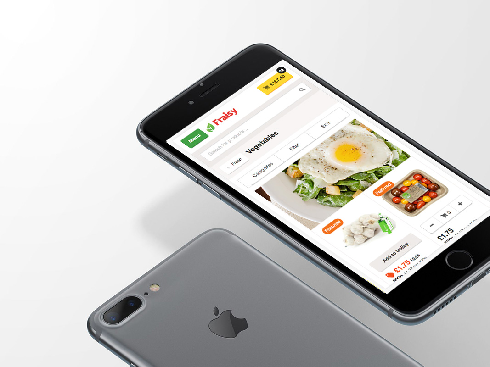
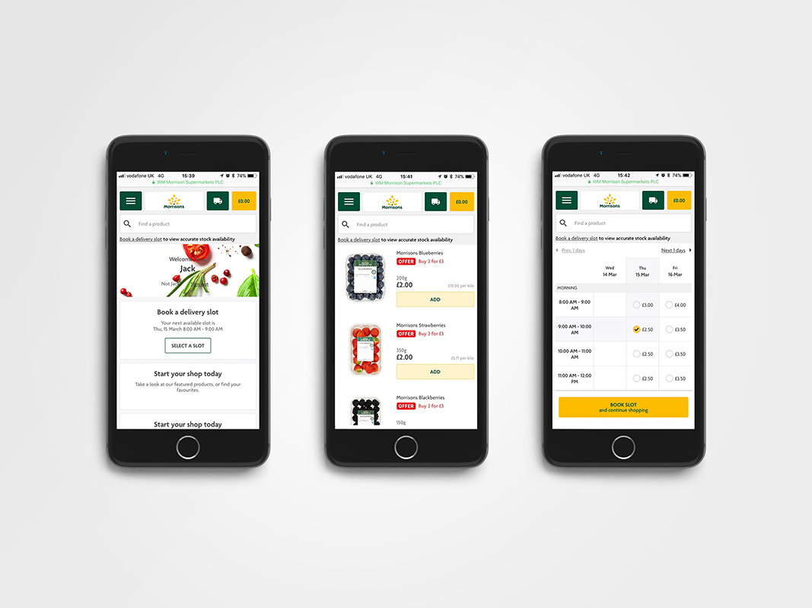
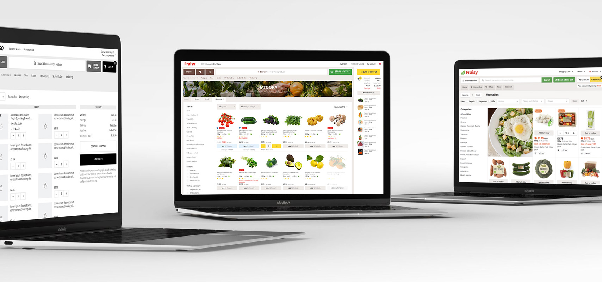
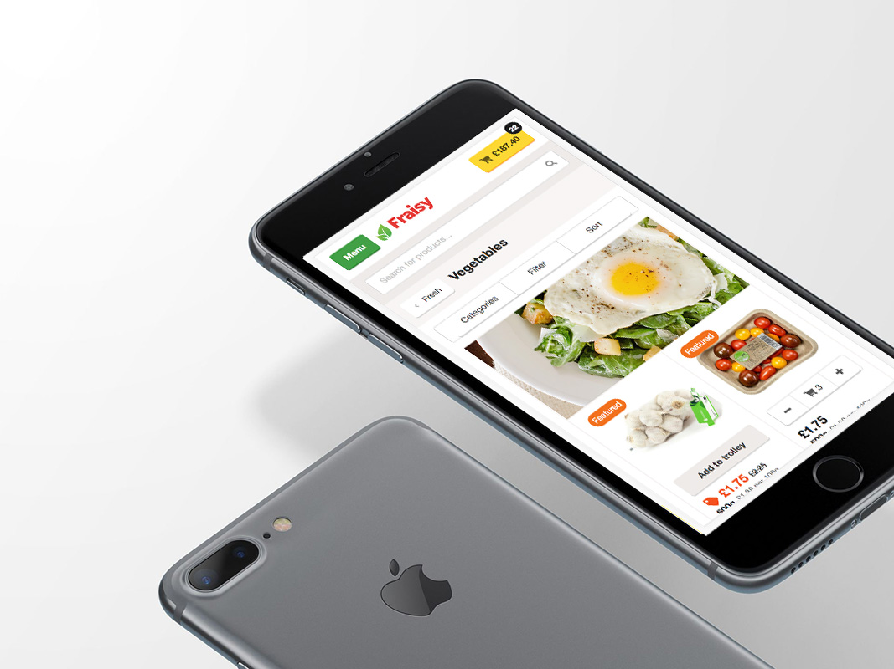
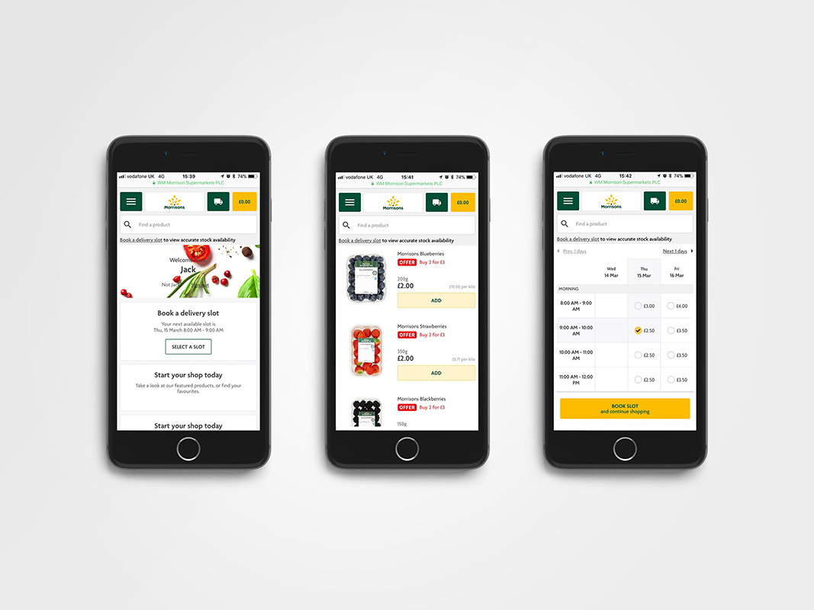
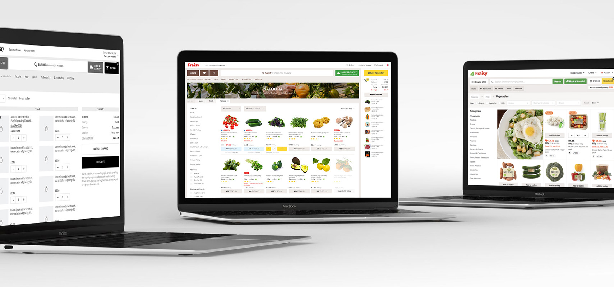

My story
The main reason why I was so thrilled to be part of the Ocado Smart Platform family was the opportunity to contribute to the development of the next generation of customer-facing e-commerce platforms of Ocado.
I started with very high expectations and ambitions but soon realised that the journey to innovation and experimentation was, from a UX perspective at that time, just a utopia. We decided to have more of an MVP approach – start by delivering what we know works and improve later.
When I started working on the e-commerce platform, I was again a one-man team. I must admit, I truly enjoyed designing the user experience of what could, in my eyes, have been the next generation of the Ocado.com webshop. My extensive previous experience in e-commerce – in grocery and general merchandise – equipped me well for the task.
With the excitement of a child, I embraced the challenge, and I started planning the next steps. There were significant factors to consider. OSP was intended to accommodate retailers with a unique business model, location and, undoubtedly, different customer experiences of online shopping. Customisation unmistakably guided my design thinking.
I developed Fraisy, the design language for the OSP customer-facing online shop. My objective was to create a consistent, customisable and clean UI kit with UX patterns that could be easily understood and further developed by the team of UXers that I was, in the meantime, forming.
Two years have passed, and today we have outstanding UX individuals who regularly partner with engineers to deliver a technologically updated design system that answers our business goals and meets our customers’ expectations.
With a design system in place, we were able to fast prototype in high fidelity and obtain the answers we needed from our users. By demoing our ideas in a more factual setting, we facilitated all conversations with product owners, engineers and our customers’ retail teams.